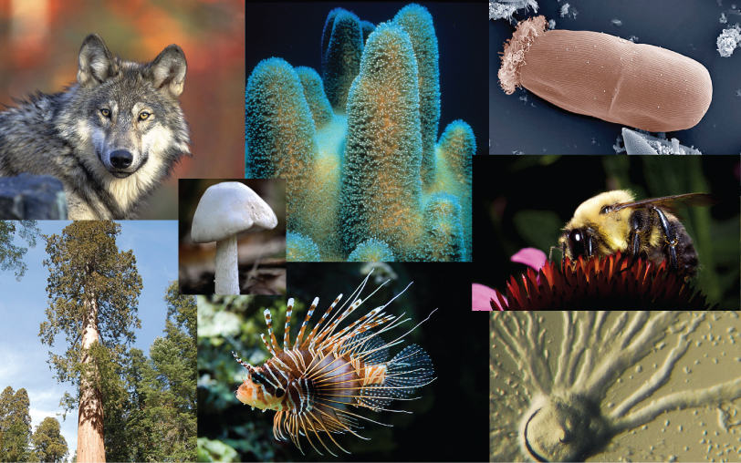
All species of living organisms—from the bacteria on our skin, to the trees in our yards, to the birds outside—evolved at some point from a different species. Although it may seem that living things today stay much the same from generation to generation, that is not the case: evolution is ongoing. Evolution is the process through which the characteristics of species change and through which new species arise.
The theory of evolution is the unifying theory of biology, meaning it is the framework within which biologists ask questions about the living world. Its power is that it provides direction for predictions about living things that are borne out in experiment after experiment. The Ukrainian-born American geneticist Theodosius Dobzhansky famously wrote that "nothing makes sense in biology except in the light of evolution." He meant that the principle that all life has evolved and diversified from a common ancestor is the foundation from which we understand all other questions in biology. This chapter will explain some of the mechanisms for evolutionary change and the kinds of questions that biologists can and have answered using evolutionary theory.
- Explain how Darwin's theory of evolution differed from the current view at the time
- Describe how the present-day theory of evolution was developed
- Describe how population genetics is used to study the evolution of populations
- Describe the four basic causes of evolution: natural selection, mutation, genetic drift, and gene flow
- Explain how each evolutionary force can influence the allele frequencies of a population
- Explain sources of evidence for evolution
- Define homologous and vestigial structures
- Describe the definition of species and how species are identified as different
- Explain allopatric and sympatric speciation
- Describe adaptive radiation
- Identify common misconceptions about evolution
- Identify common criticisms of evolution
| # | Lesson | Key Concepts | Source |
|---|---|---|---|
| 1 | Discovering How Populations Change | Darwin's voyage, Galápagos finches, natural selection theory, Darwin & Wallace, finch drought study, adaptation, convergent evolution, analogous structures, peppered moths, modern synthesis, population genetics, sexual selection | CB 11.1 |
| 2 | Mechanisms of Evolution | Population genetics, allele frequency, Hardy-Weinberg equilibrium, genetic drift, bottleneck effect, founder effect, gene flow, natural selection as mechanism | CB 11.2 |
| 3 | Evidence of Evolution | Fossils, anatomy & embryology, homologous structures, vestigial structures, biogeography, molecular biology | CB 11.3 |
| 4 | Speciation & Misconceptions | Species definition, allopatric speciation, sympatric speciation, adaptive radiation, polyploidy, common misconceptions about evolution | CB 11.4–11.5 |
| 5 | Practice Test | All topics — comprehensive assessment | All |
| Standard | Description | Lessons |
|---|---|---|
| BIO.7a | Natural selection and its role in the evolution of populations | 1, 2 |
| BIO.7b | Evidence supporting the theory of evolution | 3 |
| BIO.7c | How populations change through genetic drift, gene flow, mutation, and natural selection | 1, 2 |
| BIO.8a | How geographic isolation can lead to speciation | 4 |
| BIO.8b | How evolution contributes to the diversity of life | 1, 3, 4 |
- Explain how Darwin's theory of evolution differed from the current view at the time
- Describe how the present-day theory of evolution was developed
- Describe how population genetics is used to study the evolution of populations
The theory of evolution by natural selection describes a mechanism for species change over time. That species change had been suggested and debated well before Darwin. The view that species were static and unchanging was grounded in the writings of Plato, yet there were also ancient Greeks that expressed evolutionary ideas.
In the eighteenth century, ideas about the evolution of animals were reintroduced by the naturalist Georges-Louis Leclerc, Comte de Buffon and even by Charles Darwin's grandfather, Erasmus Darwin. During this time, it was also accepted that there were extinct species. At the same time, James Hutton, the Scottish naturalist, proposed that geological change occurred gradually by the accumulation of small changes from processes (over long periods of time) just like those happening today. This contrasted with the predominant view that the geology of the planet was a consequence of catastrophic events occurring during a relatively brief past. Hutton's view was later popularized by the geologist Charles Lyell in the nineteenth century. Lyell became a friend to Darwin and his ideas were very influential on Darwin's thinking. Lyell argued that the greater age of Earth gave more time for gradual change in species, and the process provided an analogy for gradual change in species.
In the early nineteenth century, Jean-Baptiste Lamarck published a book that detailed a mechanism for evolutionary change that is now referred to as inheritance of acquired characteristics. In Lamarck's theory, modifications in an individual caused by its environment, or the use or disuse of a structure during its lifetime, could be inherited by its offspring and, thus, bring about change in a species. While this mechanism for evolutionary change as described by Lamarck was discredited, Lamarck's ideas were an important influence on evolutionary thought. The inscription on the statue of Lamarck that stands at the gates of the Jardin des Plantes in Paris describes him as the "founder of the doctrine of evolution."
The actual mechanism for evolution was independently conceived of and described by two naturalists, Charles Darwin and Alfred Russell Wallace, in the mid-nineteenth century. Importantly, each spent time exploring the natural world on expeditions to the tropics. From 1831 to 1836, Darwin traveled around the world on H.M.S. Beagle, visiting South America, Australia, and the southern tip of Africa. Wallace traveled to Brazil to collect insects in the Amazon rainforest from 1848 to 1852 and to the Malay Archipelago from 1854 to 1862. Darwin's journey, like Wallace's later journeys in the Malay Archipelago, included stops at several island chains, the last being the Galápagos Islands (west of Ecuador). On these islands, Darwin observed species of organisms on different islands that were clearly similar, yet had distinct differences. For example, the ground finches inhabiting the Galápagos Islands comprised several species that each had a unique beak shape (Figure 11.2). He observed both that these finches closely resembled another finch species on the mainland of South America and that the group of species in the Galápagos formed a graded series of beak sizes and shapes, with very small differences between the most similar. Darwin imagined that the island species might be all species modified from one original mainland species. In 1860, he wrote, "Seeing this gradation and diversity of structure in one small, intimately related group of birds, one might really fancy that from an original paucity of birds in this archipelago, one species had been taken and modified for different ends."
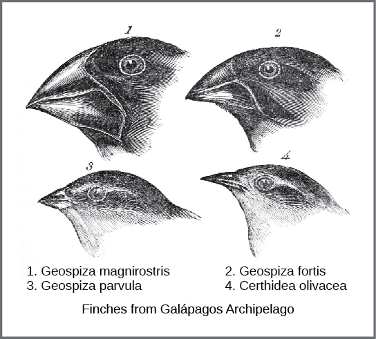
Wallace and Darwin both observed similar patterns in other organisms and independently conceived a mechanism to explain how and why such changes could take place. Darwin called this mechanism natural selection. Natural selection, Darwin argued, was an inevitable outcome of three principles that operated in nature. First, the characteristics of organisms are inherited, or passed from parent to offspring. Second, more offspring are produced than are able to survive; in other words, resources for survival and reproduction are limited. The capacity for reproduction in all organisms outstrips the availability of resources to support their numbers. Thus, there is a competition for those resources in each generation. Both Darwin and Wallace's understanding of this principle came from reading an essay by the economist Thomas Malthus, who discussed this principle in relation to human populations. Third, offspring vary among each other in regard to their characteristics and those variations are inherited. Out of these three principles, Darwin and Wallace reasoned that offspring with inherited characteristics that allow them to best compete for limited resources will survive and have more offspring than those individuals with variations that are less able to compete. Because characteristics are inherited, these traits will be better represented in the next generation. This will lead to change in populations over generations in a process that Darwin called "descent with modification."
Papers by Darwin and Wallace (Figure 11.3) presenting the idea of natural selection were read together in 1858 before the Linnaean Society in London. The following year Darwin's book, On the Origin of Species, was published, which outlined in considerable detail his arguments for evolution by natural selection.
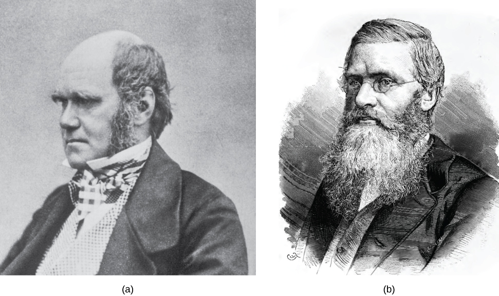
Demonstrations of evolution by natural selection can be time consuming. One of the best demonstrations has been in the very birds that helped to inspire the theory, the Galápagos finches. Peter and Rosemary Grant and their colleagues have studied Galápagos finch populations every year since 1976 and have provided important demonstrations of the operation of natural selection. The Grants found changes from one generation to the next in the beak shapes of the medium ground finches on the Galápagos island of Daphne Major. The medium ground finch feeds on seeds. The birds have inherited variation in the bill shape with some individuals having wide, deep bills and others having thinner bills. Large-billed birds feed more efficiently on large, hard seeds, whereas smaller billed birds feed more efficiently on small, soft seeds. During 1977, a drought period altered vegetation on the island. After this period, the number of seeds declined dramatically: the decline in small, soft seeds was greater than the decline in large, hard seeds. The large-billed birds were able to survive better than the small-billed birds the following year. The year following the drought when the Grants measured beak sizes in the much-reduced population, they found that the average bill size was larger (Figure 11.4). This was clear evidence for natural selection (differences in survival) of bill size caused by the availability of seeds. The Grants had studied the inheritance of bill sizes and knew that the surviving large-billed birds would tend to produce offspring with larger bills, so the selection would lead to evolution of bill size. Subsequent studies by the Grants have demonstrated selection on and evolution of bill size in this species in response to changing conditions on the island. The evolution has occurred both to larger bills, as in this case, and to smaller bills when large seeds became rare.
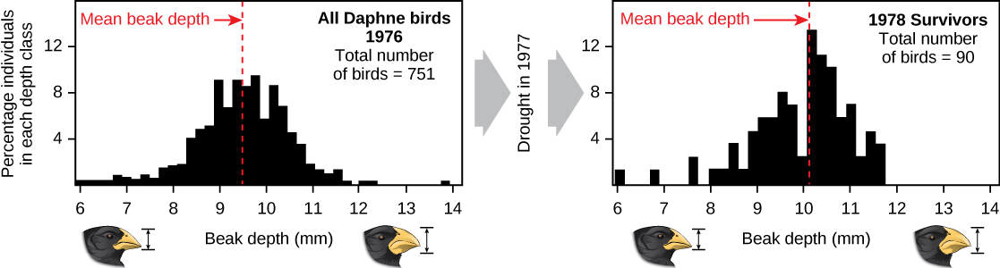
Natural selection can only take place if there is variation, or differences, among individuals in a population. Importantly, these differences must have some genetic basis; otherwise, selection will not lead to change in the next generation. This is critical because variation among individuals can be caused by non-genetic reasons, such as an individual being taller because of better nutrition rather than different genes.
Genetic diversity in a population comes from two main sources: mutation and sexual reproduction. Mutation, a change in DNA, is the ultimate source of new alleles or new genetic variation in any population. An individual that has a mutated gene might have a different trait than other individuals in the population. However, this is not always the case. A mutation can have one of three outcomes on the organisms' appearance (or phenotype):
- A mutation may affect the phenotype of the organism in a way that gives it reduced fitness—lower likelihood of survival, resulting in fewer offspring.
- A mutation may produce a phenotype with a beneficial effect on fitness.
- Many mutations, called neutral mutations, will have no effect on fitness.
Mutations may also have a whole range of effect sizes on the fitness of the organism that expresses them in their phenotype, from a small effect to a great effect. Sexual reproduction and crossing over in meiosis also lead to genetic diversity: when two parents reproduce, unique combinations of alleles assemble to produce unique genotypes and, thus, phenotypes in each of the offspring.
A heritable trait that aids the survival and reproduction of an organism in its present environment is called an adaptation. An adaptation is a "match" of the organism to the environment. Adaptation to an environment comes about when a change in the range of genetic variation occurs over time that increases or maintains the match of the population with its environment. The variations in finch beaks shifted from generation to generation providing adaptation to food availability.
Whether or not a trait is favorable depends on the environment at the time. The same traits do not always have the same relative benefit or disadvantage because environmental conditions can change. For example, finches with large bills were benefited in one climate, while small bills were a disadvantage; in a different climate, the relationship reversed.
The evolution of species has resulted in enormous variation in form and function. When two species evolve in different directions from a common point, it is called divergent evolution. Such divergent evolution can be seen in the forms of the reproductive organs of flowering plants, which share the same basic anatomies; however, they can look very different as a result of selection in different physical environments, and adaptation to different kinds of pollinators (Figure 11.5).
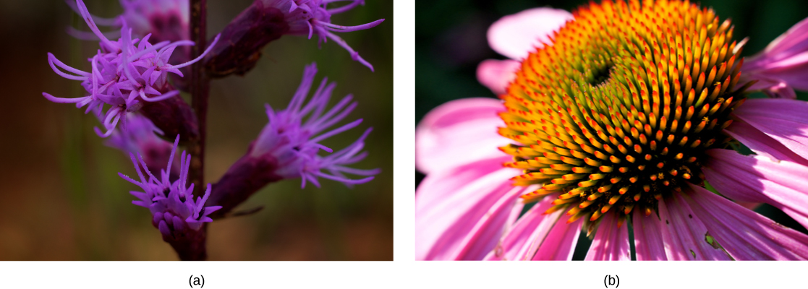
In other cases, similar phenotypes evolve independently in distantly related species. For example, flight has evolved in both bats and insects, and they both have structures we refer to as wings, which are adaptations to flight. The wings of bats and insects, however, evolved from very different original structures. When similar structures arise through evolution independently in different species it is called convergent evolution. The wings of bats and insects are called analogous structures; they are similar in function and appearance, but do not share an origin in a common ancestor. Instead they evolved independently in the two lineages. The wings of a hummingbird and an ostrich are homologous structures, meaning they share similarities (despite their differences resulting from evolutionary divergence). The wings of hummingbirds and ostriches did not evolve independently in the hummingbird lineage and the ostrich lineage—they descended from a common ancestor with wings.
The mechanisms of inheritance, genetics, were not understood at the time Darwin and Wallace were developing their idea of natural selection. This lack of understanding was a stumbling block to comprehending many aspects of evolution. In fact, blending inheritance was the predominant (and incorrect) genetic theory of the time, which made it difficult to understand how natural selection might operate. Darwin and Wallace were unaware of the genetics work by Austrian monk Gregor Mendel, which was published in 1866, not long after publication of On the Origin of Species. Mendel's work was rediscovered in the early twentieth century at which time geneticists were rapidly coming to an understanding of the basics of inheritance. Initially, the newly discovered particulate nature of genes made it difficult for biologists to understand how gradual evolution could occur. But over the next few decades genetics and evolution were integrated in what became known as the modern synthesis—the coherent understanding of the relationship between natural selection and genetics that took shape by the 1940s and is generally accepted today. In sum, the modern synthesis describes how evolutionary pressures, such as natural selection, can affect a population's genetic makeup, and, in turn, how this can result in the gradual evolution of populations and species. The theory also connects this gradual change of a population over time, called microevolution, with the processes that gave rise to new species and higher taxonomic groups with widely divergent characters, called macroevolution.
Recall that a gene for a particular character may have several variants, or alleles, that code for different traits associated with that character. For example, in the ABO blood type system in humans, three alleles determine the particular blood-type carbohydrate on the surface of red blood cells. Each individual in a population of diploid organisms can only carry two alleles for a particular gene, but more than two may be present in the individuals that make up the population. Mendel followed alleles as they were inherited from parent to offspring. In the early twentieth century, biologists began to study what happens to all the alleles in a population in a field of study known as population genetics.
Until now, we have defined evolution as a change in the characteristics of a population of organisms, but behind that phenotypic change is genetic change. In population genetic terms, evolution is defined as a change in the frequency of an allele in a population. Using the ABO system as an example, the frequency of one of the alleles, IA, is the number of copies of that allele divided by all the copies of the ABO gene in the population. For example, a study in Jordan found a frequency of IA to be 26.1 percent. The IB, I0 alleles made up 13.4 percent and 60.5 percent of the alleles respectively, and all of the frequencies add up to 100 percent. A change in this frequency over time would constitute evolution in the population.
There are several ways the allele frequencies of a population can change. One of those ways is natural selection. If a given allele confers a phenotype that allows an individual to have more offspring that survive and reproduce, that allele, by virtue of being inherited by those offspring, will be in greater frequency in the next generation. Since allele frequencies always add up to 100 percent, an increase in the frequency of one allele always means a corresponding decrease in one or more of the other alleles. Highly beneficial alleles may, over a very few generations, become "fixed" in this way, meaning that every individual of the population will carry the allele. Similarly, detrimental alleles may be swiftly eliminated from the gene pool, the sum of all the alleles in a population. Part of the study of population genetics is tracking how selective forces change the allele frequencies in a population over time, which can give scientists clues regarding the selective forces that may be operating on a given population. The studies of changes in wing coloration in the peppered moth from mottled white to dark in response to soot-covered tree trunks and then back to mottled white when factories stopped producing so much soot is a classic example of studying evolution in natural populations (Figure 11.6).
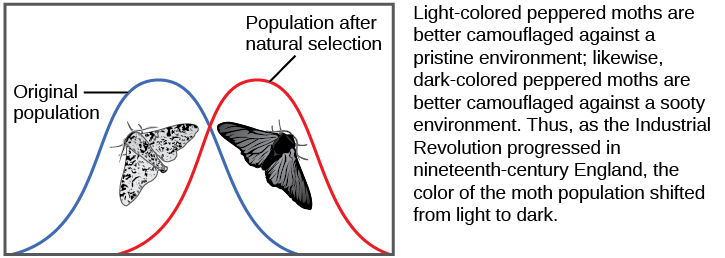
In the early twentieth century, English mathematician Godfrey Hardy and German physician Wilhelm Weinberg independently provided an explanation for a somewhat counterintuitive concept. Hardy's original explanation was in response to a misunderstanding as to why a "dominant" allele, one that masks a recessive allele, should not increase in frequency in a population until it eliminated all the other alleles. The question resulted from a common confusion about what "dominant" means, but it forced Hardy, who was not even a biologist, to point out that if there are no factors that affect an allele frequency those frequencies will remain constant from one generation to the next. This principle is now known as the Hardy-Weinberg equilibrium. The theory states that a population's allele and genotype frequencies are inherently stable—unless some kind of evolutionary force is acting on the population, the population would carry the same alleles in the same proportions generation after generation. Individuals would, as a whole, look essentially the same and this would be unrelated to whether the alleles were dominant or recessive. The four most important evolutionary forces, which will disrupt the equilibrium, are natural selection, mutation, genetic drift, and migration into or out of a population. A fifth factor, nonrandom mating, will also disrupt the Hardy-Weinberg equilibrium but only by shifting genotype frequencies, not allele frequencies (unless the allele contributes toward increased or decreased reproductive potential). In nonrandom mating, individuals are more likely to mate with individuals with specific phenotypes rather than at random. Since nonrandom mating does not change allele frequencies, it does not cause evolution directly. Natural selection has been described. Mutation creates one allele out of another one and changes an allele's frequency by a small, but continuous amount each generation. Each allele is generated by a low, constant mutation rate that will slowly increase the allele's frequency in a population if no other forces act on the allele. If natural selection acts against the allele, it will be removed from the population at a low rate leading to a frequency that results from a balance between selection and mutation. This is one reason that genetic diseases remain in the human population at very low frequencies. If the allele is favored by selection, it will increase in frequency. Genetic drift causes random changes in allele frequencies when populations are small. Genetic drift can often be important in evolution, as discussed in the next section. Finally, if two populations of a species have different allele frequencies, migration of individuals between them will cause frequency changes in both populations. As it happens, there is no population in which one or more of these processes are not operating, so populations are always evolving, and the Hardy-Weinberg equilibrium will never be exactly observed. However, the Hardy-Weinberg principle gives scientists a baseline expectation for allele frequencies in a non-evolving population to which they can compare evolving populations and thereby infer what evolutionary forces might be at play. The population is evolving if the frequencies of alleles or genotypes deviate from the value expected from the Hardy-Weinberg principle.
Darwin identified a special case of natural selection that he called sexual selection. Sexual selection affects an individual's ability to mate and thus produce offspring, and it leads to the evolution of dramatic traits that often appear maladaptive in terms of survival but persist because they give their owners greater reproductive success. Sexual selection occurs in two ways: through intrasexual selection, as male–male or female–female competition for mates, and through intersexual selection, as female or male selection of mates. Male–male competition takes the form of conflicts between males, which are often ritualized, but may also pose significant threats to a male's survival. Sometimes the competition is for territory, with females more likely to mate with males with higher quality territories. Female choice occurs when females choose a male based on a particular trait, such as feather colors, the performance of a mating dance, or the building of an elaborate structure. In some cases male–male competition and female choice combine in the mating process. In each of these cases, the traits selected for, such as fighting ability or feather color and length, become enhanced in the males. In general, it is thought that sexual selection can proceed to a point at which natural selection against a character's further enhancement prevents its further evolution because it negatively impacts the male's ability to survive. For example, colorful feathers or an elaborate display make the male more obvious to predators.
Explain Darwin's three principles of natural selection. Then describe how the Grants' study of Galápagos finches during the 1977 drought provided evidence for natural selection. Finally, explain the difference between convergent and divergent evolution, using examples.
- Describe the four basic causes of evolution: natural selection, mutation, genetic drift, and gene flow
- Explain how each evolutionary force can influence the allele frequencies of a population
The Hardy-Weinberg equilibrium principle says that allele frequencies in a population will remain constant in the absence of the four factors that could change them. Those factors are natural selection, mutation, genetic drift, and migration (gene flow). In fact, we know they are probably always affecting populations.
Natural selection has already been discussed. Alleles are expressed in a phenotype. Depending on the environmental conditions, the phenotype confers an advantage or disadvantage to the individual with the phenotype relative to the other phenotypes in the population. If it is an advantage, then that individual will likely have more offspring than individuals with the other phenotypes, and this will mean that the allele behind the phenotype will have greater representation in the next generation. If conditions remain the same, those offspring, which are carrying the same allele, will also benefit. Over time, the allele will increase in frequency in the population.
Mutation is a source of new alleles in a population. Mutation is a change in the DNA sequence of the gene. A mutation can change one allele into another, but the net effect is a change in frequency. The change in frequency resulting from mutation is small, so its effect on evolution is small unless it interacts with one of the other factors, such as selection. A mutation may produce an allele that is selected against, selected for, or selectively neutral. Harmful mutations are removed from the population by selection and will generally only be found in very low frequencies equal to the mutation rate. Beneficial mutations will spread through the population through selection, although that initial spread is slow. Whether or not a mutation is beneficial or harmful is determined by whether it helps an organism survive to sexual maturity and reproduce. It should be noted that mutation is the ultimate source of genetic variation in all populations—new alleles, and, therefore, new genetic variations arise through mutation.
Another way a population's allele frequencies can change is genetic drift (Figure 11.7), which is simply the effect of chance. Genetic drift is most important in small populations. Drift would be completely absent in a population with infinite individuals, but, of course, no population is this large. Genetic drift occurs because the alleles in an offspring generation are a random sample of the alleles in the parent generation. Alleles may or may not make it into the next generation due to chance events including mortality of an individual, events affecting finding a mate, and even the events affecting which gametes end up in fertilizations. If one individual in a population of ten individuals happens to die before it leaves any offspring to the next generation, all of its genes—a tenth of the population's gene pool—will be suddenly lost. In a population of 100, that 1 individual represents only 1 percent of the overall gene pool; therefore, it has much less impact on the population's genetic structure and is unlikely to remove all copies of even a relatively rare allele.
Imagine a population of ten individuals, half with allele A and half with allele a (the individuals are haploid). In a stable population, the next generation will also have ten individuals. Choose that generation randomly by flipping a coin ten times and let heads be A and tails be a. It is unlikely that the next generation will have exactly half of each allele. There might be six of one and four of the other, or some different set of frequencies. Thus, the allele frequencies have changed and evolution has occurred. A coin will no longer work to choose the next generation (because the odds are no longer one half for each allele). The frequency in each generation will drift up and down on what is known as a random walk until at one point either all A or all a are chosen and that allele is fixed from that point on. This could take a very long time for a large population. This simplification is not very biological, but it can be shown that real populations behave this way. The effect of drift on frequencies is greater the smaller a population is. Its effect is also greater on an allele with a frequency far from one half. Drift will influence every allele, even those that are being naturally selected.
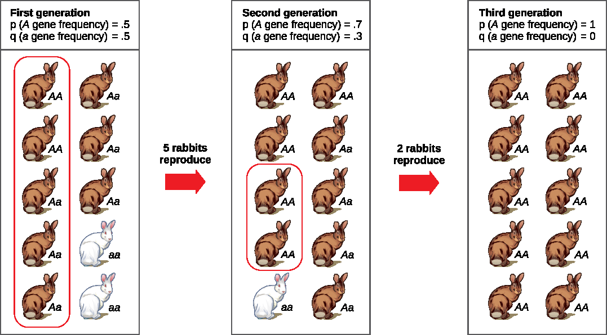
Genetic drift can also be magnified by natural or human-caused events, such as a disaster that randomly kills a large portion of the population, which is known as the bottleneck effect that results in a large portion of the gene pool suddenly being wiped out (Figure 11.8). In one fell swoop, the genetic structure of the survivors becomes the genetic structure of the entire population, which may be very different from the pre-disaster population. The disaster must be one that kills for reasons unrelated to the organism's traits, such as a hurricane or lava flow. A mass killing caused by unusually cold temperatures at night, is likely to affect individuals differently depending on the alleles they possess that confer cold hardiness.
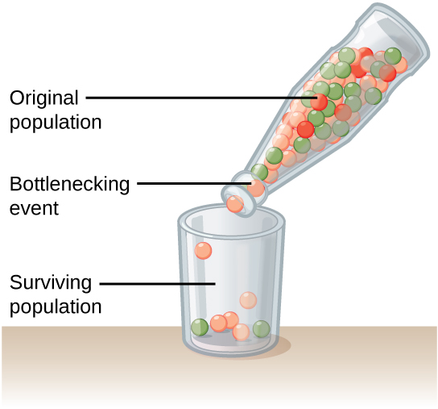
Another scenario in which populations might experience a strong influence of genetic drift is if some portion of the population leaves to start a new population in a new location, or if a population gets divided by a physical barrier of some kind. In this situation, those individuals are unlikely to be representative of the entire population which results in the founder effect. The founder effect occurs when the genetic structure matches that of the new population's founding fathers and mothers. The founder effect is believed to have been a key factor in the genetic history of the Afrikaner population of Dutch settlers in South Africa, as evidenced by mutations that are common in Afrikaners but rare in most other populations. This is likely due to a higher-than-normal proportion of the founding colonists, which were a small sample of the original population, carried these mutations. As a result, the population expresses unusually high incidences of Huntington's disease (HD) and Fanconi anemia (FA), a genetic disorder known to cause bone marrow and congenital abnormalities, and even cancer.
Another important evolutionary force is gene flow, or the flow of alleles in and out of a population resulting from the migration of individuals or gametes (Figure 11.9). While some populations are fairly stable, others experience more flux. Many plants, for example, send their seeds far and wide, by wind or in the guts of animals; these seeds may introduce alleles common in the source population to a new population in which they are rare.
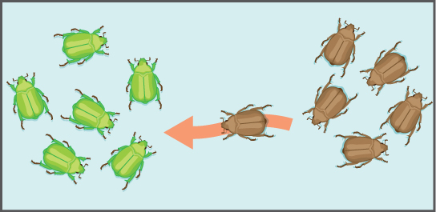
Describe the four basic causes of evolution (natural selection, mutation, genetic drift, and gene flow). Explain the difference between the bottleneck effect and the founder effect, and give an example of each.
- Explain sources of evidence for evolution
- Define homologous and vestigial structures
The evidence for evolution is compelling and extensive. Looking at every level of organization in living systems, biologists see the signature of past and present evolution. Darwin dedicated a large portion of his book, On the Origin of Species, identifying patterns in nature that were consistent with evolution and since Darwin our understanding has become clearer and broader.
Fossils provide solid evidence that organisms from the past are not the same as those found today; fossils show the gradual evolutionary changes over time. Scientists determine the age of fossils and categorize them all over the world to determine when the organisms lived relative to each other. The resulting fossil record tells the story of the past, and shows the evolution of form over millions of years (Figure 11.10). For example, highly detailed fossil records have been recovered for sequences of species in the evolution of whales and modern horses. The fossil record of horses in North America is especially rich and many contain transition fossils: those showing intermediate anatomy between earlier and later forms. The fossil record extends back to a dog-like ancestor some 55 million years ago that gave rise to the first horse-like species 55 to 42 million years ago in the genus Eohippus. The series of fossils tracks the change in anatomy resulting from a gradual drying trend that changed the landscape from a forested one to a prairie. Successive fossils show the evolution of teeth shapes and foot and leg anatomy to a grazing habit, with adaptations for escaping predators, for example in species of Mesohippus found from 40 to 30 million years ago. Later species showed gains in size, such as those of Hipparion, which existed from about 23 to 2 million years ago. The fossil record shows several adaptive radiations in the horse lineage, which is now much reduced to only one genus, Equus, with several species.
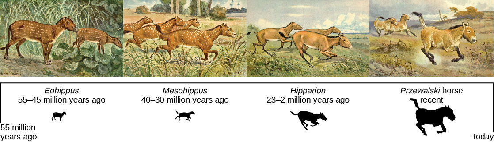
Another type of evidence for evolution is the presence of structures in organisms that share the same basic form. For example, the bones in the appendages of a human, dog, bird, and whale all share the same overall construction (Figure 11.11). That similarity results from their origin in the appendages of a common ancestor. Over time, evolution led to changes in the shapes and sizes of these bones in different species, but they have maintained the same overall layout, evidence of descent from a common ancestor. Scientists call these synonymous parts homologous structures. Some structures exist in organisms that have no apparent function at all, and appear to be residual parts from a past ancestor. For example, some snakes have pelvic bones despite having no legs because they descended from reptiles that did have legs. These unused structures without function are called vestigial structures. Other examples of vestigial structures are wings on flightless birds (which may have other functions), leaves on some cacti, traces of pelvic bones in whales, and the sightless eyes of cave animals.
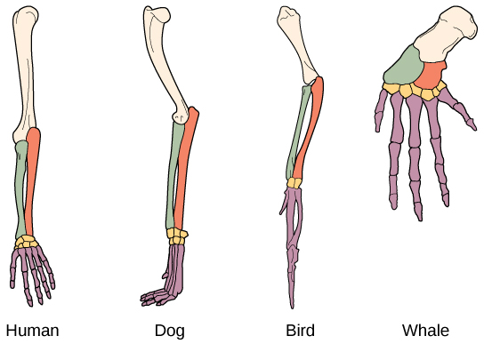
Another piece of evidence of evolution is the convergence of form in organisms that share similar environments. For example, species of unrelated animals, such as the arctic fox and ptarmigan (a bird), living in the arctic region have temporary white coverings during winter to blend with the snow and ice (Figure 11.12). The similarity occurs not because of common ancestry, indeed one covering is of fur and the other of feathers, but because of similar selection pressures—the benefits of not being seen by predators.
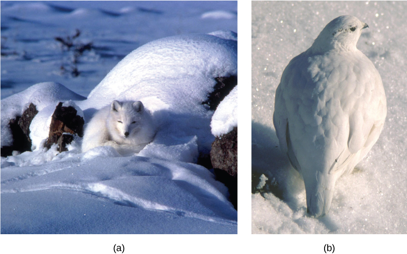
Embryology, the study of the development of the anatomy of an organism to its adult form also provides evidence of relatedness between now widely divergent groups of organisms. Structures that are absent in some groups often appear in their embryonic forms and disappear by the time the adult or juvenile form is reached. For example, all vertebrate embryos, including humans, exhibit gill slits at some point in their early development. These disappear in the adults of terrestrial groups, but are maintained in adult forms of aquatic groups such as fish and some amphibians. Great ape embryos, including humans, have a tail structure during their development that is lost by the time of birth. The reason embryos of unrelated species are often similar is that mutational changes that affect the organism during embryonic development can cause amplified differences in the adult, even while the embryonic similarities are preserved.
The geographic distribution of organisms on the planet follows patterns that are best explained by evolution in conjunction with the movement of tectonic plates over geological time. Broad groups that evolved before the breakup of the supercontinent Pangaea (about 200 million years ago) are distributed worldwide. Groups that evolved since the breakup appear uniquely in regions of the planet, for example the unique flora and fauna of northern continents that formed from the supercontinent Laurasia and of the southern continents that formed from the supercontinent Gondwana. The presence of Proteaceae in Australia, southern Africa, and South America is best explained by the plant family's presence there prior to the southern supercontinent Gondwana breaking up (Figure 11.13).
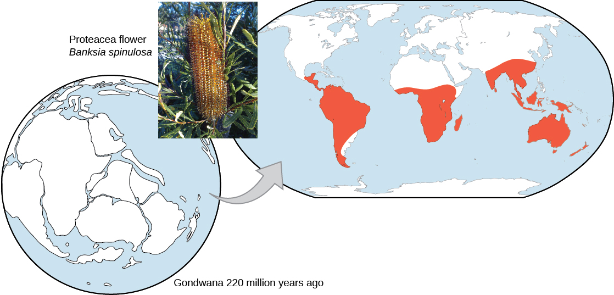
The great diversification of the marsupials in Australia and the absence of other mammals reflects that island continent's long isolation. Australia has an abundance of endemic species—species found nowhere else—which is typical of islands whose isolation by expanses of water prevents migration of species to other regions. Over time, these species diverge evolutionarily into new species that look very different from their ancestors that may exist on the mainland. The marsupials of Australia, the finches on the Galápagos, and many species on the Hawaiian Islands are all found nowhere else but on their island, yet display distant relationships to ancestral species on mainlands.
Like anatomical structures, the structures of the molecules of life reflect descent with modification. Evidence of a common ancestor for all of life is reflected in the universality of DNA as the genetic material and of the near universality of the genetic code and the machinery of DNA replication and expression. Fundamental divisions in life between the three domains are reflected in major structural differences in otherwise conservative structures such as the components of ribosomes and the structures of membranes. In general, the relatedness of groups of organisms is reflected in the similarity of their DNA sequences—exactly the pattern that would be expected from descent and diversification from a common ancestor.
DNA sequences have also shed light on some of the mechanisms of evolution. For example, it is clear that the evolution of new functions for proteins commonly occurs after gene duplication events. These duplications are a kind of mutation in which an entire gene is added as an extra copy (or many copies) in the genome. These duplications allow the free modification of one copy by mutation, selection, and drift, while the second copy continues to produce a functional protein. This allows the original function for the protein to be kept, while evolutionary forces tweak the copy until it functions in a new way.
Describe at least three different types of evidence for evolution discussed in this lesson. Include specific examples for each type, such as the fossil record of horses, homologous structures in vertebrate limbs, and the biogeographic distribution of Proteaceae.
- Describe the definition of species and how species are identified as different
- Explain allopatric and sympatric speciation
- Describe adaptive radiation
- Identify common misconceptions about evolution
- Identify common criticisms of evolution
The biological definition of species, which works for sexually reproducing organisms, is a group of actually or potentially interbreeding individuals. According to this definition, one species is distinguished from another by the possibility of matings between individuals from each species to produce fertile offspring. There are exceptions to this rule. Many species are similar enough that hybrid offspring are possible and may often occur in nature, but for the majority of species this rule generally holds. In fact, the presence of hybrids between similar species suggests that they may have descended from a single interbreeding species and that the speciation process may not yet be completed.
Given the extraordinary diversity of life on the planet there must be mechanisms for speciation: the formation of two species from one original species. Darwin envisioned this process as a branching event and diagrammed the process in the only illustration found in On the Origin of Species (Figure 11.14a). For speciation to occur, two new populations must be formed from one original population, and they must evolve in such a way that it becomes impossible for individuals from the two new populations to interbreed. Biologists have proposed mechanisms by which this could occur that fall into two broad categories. Allopatric speciation, meaning speciation in "other homelands," involves a geographic separation of populations from a parent species and subsequent evolution. Sympatric speciation, meaning speciation in the "same homeland," involves speciation occurring within a parent species while remaining in one location.
Biologists think of speciation events as the splitting of one ancestral species into two descendant species. There is no reason why there might not be more than two species formed at one time except that it is less likely and such multiple events can also be conceptualized as single splits occurring close in time.
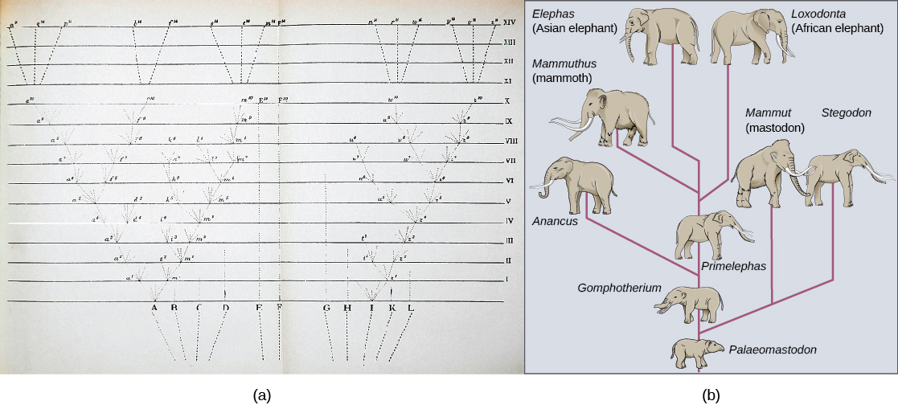
A geographically continuous population has a gene pool that is relatively homogeneous. Gene flow, the movement of alleles across the range of the species, is relatively free because individuals can move and then mate with individuals in their new location. Thus, the frequency of an allele at one end of a distribution will be similar to the frequency of the allele at the other end. When populations become geographically discontinuous that free-flow of alleles is prevented. When that separation lasts for a period of time, the two populations are able to evolve along different trajectories. Thus, their allele frequencies at numerous genetic loci gradually become more and more different as new alleles independently arise by mutation in each population. Typically, environmental conditions, such as climate, resources, predators, and competitors, for the two populations will differ causing natural selection to favor divergent adaptations in each group. Different histories of genetic drift, enhanced because the populations are smaller than the parent population, will also lead to divergence.
Given enough time, the genetic and phenotypic divergence between populations will likely affect characters that influence reproduction enough that were individuals of the two populations brought together, mating would be less likely, or if a mating occurred, offspring would be non-viable or infertile. Many types of diverging characters may affect the reproductive isolation (inability to interbreed) of the two populations. These mechanisms of reproductive isolation can be divided into prezygotic mechanisms (those that operate before fertilization) and postzygotic mechanisms (those that operate after fertilization). Prezygotic mechanisms include traits that allow the individuals to find each other, such as the timing of mating, sensitivity to pheromones, or choice of mating sites. If individuals are able to encounter each other, character divergence may prevent courtship rituals from leading to a mating either because female preferences have changed or male behaviors have changed. Physiological changes may interfere with successful fertilization if mating is able to occur. Postzygotic mechanisms include genetic incompatibilities that prevent proper development of the offspring, or if the offspring live, they may be unable to produce viable gametes themselves as in the example of the mule, the infertile offspring of a female horse and a male donkey.
If the two isolated populations are brought back together and the hybrid offspring that formed from matings between individuals of the two populations have lower survivorship or reduced fertility, then selection will favor individuals that are able to discriminate between potential mates of their own population and the other population. This selection will enhance the reproductive isolation.
Isolation of populations leading to allopatric speciation can occur in a variety of ways: from a river forming a new branch, erosion forming a new valley, or a group of organisms traveling to a new location without the ability to return, such as seeds floating over the ocean to an island. The nature of the geographic separation necessary to isolate populations depends entirely on the biology of the organism and its potential for dispersal. If two flying insect populations took up residence in separate nearby valleys, chances are that individuals from each population would fly back and forth, continuing gene flow. However, if two rodent populations became divided by the formation of a new lake, continued gene flow would be unlikely; therefore, speciation would be more likely.
Biologists group allopatric processes into two categories. If a few members of a species move to a new geographical area, this is called dispersal. If a natural situation arises to physically divide organisms, this is called vicariance.
Scientists have documented numerous cases of allopatric speciation taking place. For example, along the west coast of the United States, two separate subspecies of spotted owls exist. The northern spotted owl has genetic and phenotypic differences from its close relative, the Mexican spotted owl, which lives in the south (Figure 11.15). The cause of their initial separation is not clear, but it may have been caused by the glaciers of the ice age dividing an initial population into two.
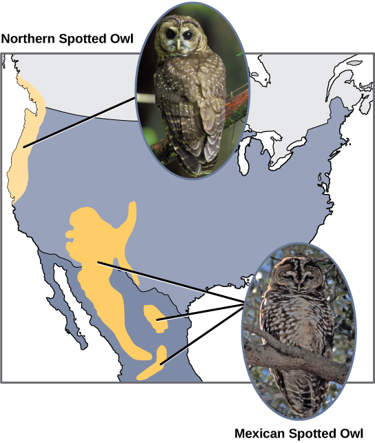
Additionally, scientists have found that the further the distance between two groups that once were the same species, the more likely for speciation to take place. This seems logical because as the distance increases, the various environmental factors would likely have less in common than locations in close proximity. Consider the two owls; in the north, the climate is cooler than in the south; the other types of organisms in each ecosystem differ, as do their behaviors and habits; also, the hunting habits and prey choices of the owls in the south vary from the northern ones. These variances can lead to evolved differences in the owls, and over time speciation will likely occur unless gene flow between the populations is restored.
In some cases, a population of one species disperses throughout an area, and each finds a distinct niche or isolated habitat. Over time, the varied demands of their new lifestyles lead to multiple speciation events originating from a single species, which is called adaptive radiation. From one point of origin, many adaptations evolve causing the species to radiate into several new ones. Island archipelagos like the Hawaiian Islands provide an ideal context for adaptive radiation events because water surrounds each island, which leads to geographical isolation for many organisms (Figure 11.16). The Hawaiian honeycreeper illustrates one example of adaptive radiation. From a single species, called the founder species, numerous species have evolved, including the eight shown in Figure 11.16.
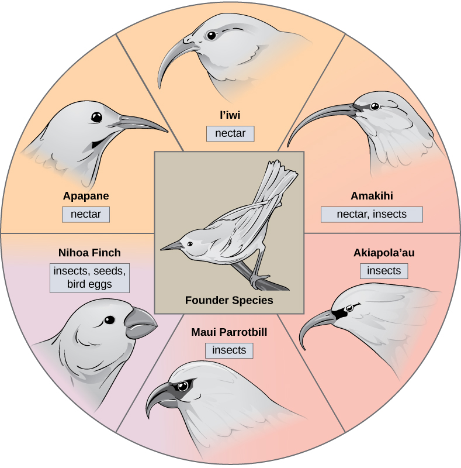
Notice the differences in the species' beaks in Figure 11.16. Change in the genetic variation for beaks in response to natural selection based on specific food sources in each new habitat led to evolution of a different beak suited to the specific food source. The fruit and seed-eating birds have thicker, stronger beaks which are suited to break hard nuts. The nectar-eating birds have long beaks to dip into flowers to reach their nectar. The insect-eating birds have beaks like swords, appropriate for stabbing and impaling insects. Darwin's finches are another well-studied example of adaptive radiation in an archipelago.
Can divergence occur if no physical barriers are in place to separate individuals who continue to live and reproduce in the same habitat? A number of mechanisms for sympatric speciation have been proposed and studied.
One form of sympatric speciation can begin with a chromosomal error during meiosis or the formation of a hybrid individual with too many chromosomes. Polyploidy is a condition in which a cell, or organism, has an extra set, or sets, of chromosomes. Scientists have identified two main types of polyploidy that can lead to reproductive isolation of an individual in the polyploid state. In some cases a polyploid individual will have two or more complete sets of chromosomes from its own species in a condition called autopolyploidy (Figure 11.17). The prefix "auto" means self, so the term means multiple chromosomes from one's own species. Polyploidy results from an error in meiosis in which all of the chromosomes move into one cell instead of separating.
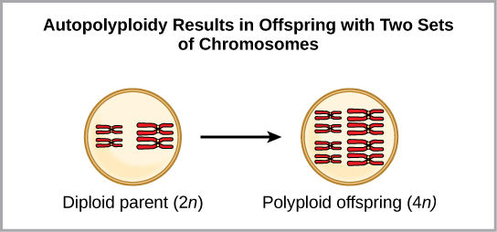
For example, if a plant species with 2n = 6 produces autopolyploid gametes that are also diploid (2n = 6, when they should be n = 3), the gametes now have twice as many chromosomes as they should have. These new gametes will be incompatible with the normal gametes produced by this plant species. But they could either self-pollinate or reproduce with other autopolyploid plants with gametes having the same diploid number. In this way, sympatric speciation can occur quickly by forming offspring with 4n called a tetraploid. These individuals would immediately be able to reproduce only with those of this new kind and not those of the ancestral species. The other form of polyploidy occurs when individuals of two different species reproduce to form a viable offspring called an allopolyploid. The prefix "allo" means "other" (recall from allopatric); therefore, an allopolyploid occurs when gametes from two different species combine. Figure 11.18 illustrates one possible way an allopolyploidy can form. Notice how it takes two generations, or two reproductive acts, before the viable fertile hybrid results.
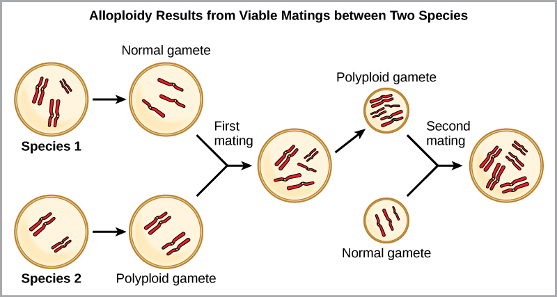
The cultivated forms of wheat, cotton, and tobacco plants are all allopolyploids. Although polyploidy occurs occasionally in animals, most chromosomal abnormalities in animals are lethal; it takes place most commonly in plants. Scientists have discovered more than 1/2 of all plant species studied relate back to a species evolved through polyploidy.
Sympatric speciation may also take place in ways other than polyploidy. For example, imagine a species of fish that lived in a lake. As the population grew, competition for food also grew. Under pressure to find food, suppose that a group of these fish had the genetic flexibility to discover and feed off another resource that was unused by the other fish. What if this new food source was found at a different depth of the lake? Over time, those feeding on the second food source would interact more with each other than the other fish; therefore they would breed together as well. Offspring of these fish would likely behave as their parents and feed and live in the same area, keeping them separate from the original population. If this group of fish continued to remain separate from the first population, eventually sympatric speciation might occur as more genetic differences accumulated between them.
This scenario does play out in nature, as do others that lead to reproductive isolation. One such place is Lake Victoria in Africa, famous for its sympatric speciation of cichlid fish. Researchers have found hundreds of sympatric speciation events in these fish, which have not only happened in great number, but also over a short period of time. Figure 11.19 shows this type of speciation among a cichlid fish population in Nicaragua. In this locale, two types of cichlids live in the same geographic location; however, they have come to have different morphologies that allow them to eat various food sources.
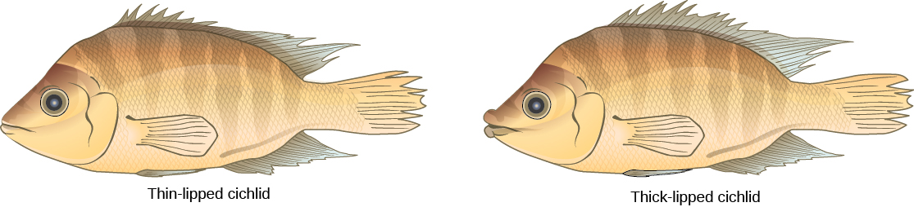
Finally, a well-documented example of ongoing sympatric speciation occurred in the apple maggot fly, Rhagoletis pomonella, which arose as an isolated population sometime after the introduction of the apple into North America. The native population of flies fed on hawthorn species and is host-specific: it only infests hawthorn trees. Importantly, it also uses the trees as a location to meet for mating. It is hypothesized that either through mutation or a behavioral mistake, flies jumped hosts and met and mated in apple trees, subsequently laying their eggs in apple fruit. The offspring matured and kept their preference for the apple trees effectively dividing the original population into two new populations separated by host species, not by geography. The host jump took place in the nineteenth century, but there are now measureable differences between the two populations of fly. It seems likely that host specificity of parasites in general is a common cause of sympatric speciation.
Although the theory of evolution initially generated some controversy, by 20 years after the publication of On the Origin of Species it was almost universally accepted by biologists, particularly younger biologists. Nevertheless, the theory of evolution is a difficult concept and misconceptions about how it works abound. In addition, there are those that reject it as an explanation for the diversity of life.
Critics of the theory of evolution dismiss its importance by purposefully confounding the everyday usage of the word "theory" with the way scientists use the word. In science, a "theory" is understood to be a concept that has been extensively tested and supported over time. We have a theory of the atom, a theory of gravity, and the theory of relativity, each of which describes what scientists understand to be facts about the world. In the same way, the theory of evolution describes facts about the living world. As such, a theory in science has survived significant efforts to discredit it by scientists, who are naturally skeptical. While theories can sometimes be overturned or revised, this does not lessen their weight but simply reflects the constantly evolving state of scientific knowledge. In contrast, a "theory" in common vernacular means a guess or suggested explanation for something. This meaning is more akin to the concept of a "hypothesis" used by scientists, which is a tentative explanation for something that is proposed to either be supported or disproved. When critics of evolution say evolution is "just a theory," they are implying that there is little evidence supporting it and that it is still in the process of being rigorously tested. This is a mischaracterization. If this were the case, geneticist Theodosius Dobzhansky would not have said that "nothing in biology makes sense, except in the light of evolution."
An individual is born with the genes it has—these do not change as the individual ages. Therefore, an individual cannot evolve or adapt through natural selection. Evolution is the change in genetic composition of a population over time, specifically over generations, resulting from differential reproduction of individuals with certain alleles. Individuals do change over their lifetime, but this is called development; it involves changes programmed by the set of genes the individual acquired at birth in coordination with the individual's environment. When thinking about the evolution of a characteristic, it is probably best to think about the change of the average value of the characteristic in the population over time. For example, when natural selection leads to bill-size change in medium ground finches in the Galápagos, this does not mean that individual bills on the finches are changing. If one measures the average bill size among all individuals in the population at one time, and then measures the average bill size in the population several years later after there has been a strong selective pressure, this average value may be different as a result of evolution. Although some individuals may survive from the first time to the second, those individuals will still have the same bill size. However, there may be enough new individuals with different bill sizes to change the average bill size.
It is a common misunderstanding that evolution includes an explanation of life's origins. Some of the theory's critics complain that it cannot explain the origin of life. The theory does not try to explain the origin of life. The theory of evolution explains how populations change over time and how life diversifies—the origin of species. It does not shed light on the beginnings of life including the origins of the first cells, which is how life is defined. The mechanisms of the origin of life on Earth are a particularly difficult problem because it occurred a very long time ago, over a very long time, and presumably just occurred once. Importantly, biologists believe that the presence of life on Earth precludes the possibility that the events that led to life on Earth can be repeated because the intermediate stages would immediately become food for existing living things. The early stages of life included the formation of organic molecules such as carbohydrates, amino acids, or nucleotides. If these were formed from inorganic precursors today, they would simply be broken down by living things. The early stages of life also probably included more complex aggregations of molecules into enclosed structures with an internal environment, a boundary layer of some form, and the external environment. Such structures, if they were formed now, would be quickly consumed or broken down by living organisms.
However, once a mechanism of inheritance was in place in the form of a molecule like DNA or RNA, either within a cell or within a pre-cell, these entities would be subject to the principle of natural selection. More effective reproducers would increase in frequency at the expense of inefficient reproducers. So while evolution does not explain the origin of life, it may have something to say about some of the processes operating once pre-living entities acquired certain properties.
Statements such as "organisms evolve in response to a change in an environment," are quite common. There are two easy misunderstandings possible with such a statement. First of all, the statement must not be understood to mean that individual organisms evolve, as was discussed above. The statement is shorthand for "a population evolves in response to a changing environment." However, a second misunderstanding may arise by interpreting the statement to mean that the evolution is somehow intentional. A changed environment results in some individuals in the population, those with particular phenotypes, benefiting and, therefore, producing proportionately more offspring than other phenotypes. This results in change in the population if the characters are genetically determined.
It is also important to understand that the variation that natural selection works on is already in a population and does not arise in response to an environmental change. For example, applying antibiotics to a population of bacteria will, over time, select for a population of bacteria that are resistant to antibiotics. The resistance, which is caused by a gene, did not arise by mutation because of the application of the antibiotic. The gene for resistance was already present in the gene pool of the bacteria, likely at a low frequency. The antibiotic, which kills the bacterial cells without the resistance gene, strongly selects for individuals that are resistant, since these would be the only ones that survived and divided. Experiments have demonstrated that mutations for antibiotic resistance do not arise as a result of antibiotic application.
In a larger sense, evolution is also not goal directed. Species do not become "better" over time; they simply track their changing environment with adaptations that maximize their reproduction in a particular environment at a particular time. Evolution has no goal of making faster, bigger, more complex, or even smarter species. This kind of language is common in popular literature. Certain organisms, ourselves included, are described as the "pinnacle" of evolution, or "perfected" by evolution. What characteristics evolve in a species are a function of the variation present and the environment, both of which are constantly changing in a non-directional way. What trait is fit in one environment at one time may well be fatal at some point in the future. This holds equally well for a species of insect as it does the human species.
The theory of evolution was controversial when it was first proposed in 1859, yet within 20 years virtually every working biologist had accepted evolution as the explanation for the diversity of life. The rate of acceptance was extraordinarily rapid, partly because Darwin had amassed an impressive body of evidence. The early controversies involved both scientific arguments against the theory and the arguments of religious leaders. It was the arguments of the biologists that were resolved after a short time, while the arguments of religious leaders have persisted to this day.
The theory of evolution replaced the predominant theory at the time that species had all been specially created within relatively recent history. Despite the prevalence of this theory, it was becoming increasingly clear to naturalists during the nineteenth century that it could no longer explain many observations of geology and the living world. The persuasiveness of the theory of evolution to these naturalists lay in its ability to explain these phenomena, and it continues to hold extraordinary explanatory power to this day. Its continued rejection by some religious leaders results from its replacement of special creation, a tenet of their religious belief. These leaders cannot accept the replacement of special creation by a mechanistic process that excludes the actions of a deity as an explanation for the diversity of life including the origins of the human species. It should be noted, however, that most of the major denominations in the United States have statements supporting the acceptance of evidence for evolution as compatible with their theologies.
The nature of the arguments against evolution by religious leaders has evolved over time. One current argument is that the theory is still controversial among biologists. This claim is simply not true. The number of working scientists who reject the theory of evolution, or question its validity and say so, is small. A Pew Research poll in 2009 found that 97 percent of the 2500 scientists polled believe species evolve. The support for the theory is reflected in signed statements from many scientific societies such as the American Association for the Advancement of Science, which includes working scientists as members. Many of the scientists that reject or question the theory of evolution are non-biologists, such as engineers, physicians, and chemists. There are no experimental results or research programs that contradict the theory. There are no papers published in peer-reviewed scientific journals that appear to refute the theory. The latter observation might be considered a consequence of suppression of dissent, but it must be remembered that scientists are skeptics and that there is a long history of published reports that challenged scientific orthodoxy in unpopular ways. Examples include the endosymbiotic theory of eukaryotic origins, the theory of group selection, the microbial cause of stomach ulcers, the asteroid-impact theory of the Cretaceous extinction, and the theory of plate tectonics. Research with evidence and ideas with scientific merit are considered by the scientific community. Research that does not meet these standards is rejected.
A common argument from some people is that alternative theories to evolution should be taught in public schools. Critics of evolution use this strategy to create uncertainty about the validity of the theory without offering actual evidence. In fact, there are no viable alternative scientific theories to evolution. The last such theory, proposed by Lamarck in the nineteenth century, was replaced by the theory of natural selection. A single exception was a research program in the Soviet Union based on Lamarck's theory during the early twentieth century that set that country's agricultural research back decades. Special creation is not a viable alternative scientific theory because it is not a scientific theory, since it relies on an untestable explanation. Intelligent design, despite the claims of its proponents, is also not a scientific explanation. This is because intelligent design posits the existence of an unknown designer of living organisms and their systems. Whether the designer is unknown or supernatural, it is a cause that cannot be measured; therefore, it is not a scientific explanation. There are two reasons not to teach nonscientific theories. First, these explanations for the diversity of life lack scientific usefulness because they do not, and cannot, give rise to research programs that promote our understanding of the natural world. Experiments cannot test non-material explanations for natural phenomena. For this reason, teaching these explanations as science in public schools is not in the public interest. Second, in the United States, it is illegal to teach them as science because the U.S. Supreme Court and lower courts have ruled that the teaching of religious belief, such as special creation or intelligent design, violates the establishment clause of the First Amendment of the U.S. Constitution, which prohibits government sponsorship of a particular religion.
The theory of evolution and science in general is, by definition, silent on the existence or non-existence of the spiritual world. Science is only able to study and know the material world. Individual biologists have sometimes been vocal atheists, but it is equally true that there are many deeply religious biologists. Nothing in biology precludes the existence of a god or other supreme beings, indeed biology as a science has nothing to say about it. Individual biologists are free to reconcile their personal and scientific knowledge as they see fit.
Compare and contrast allopatric and sympatric speciation, providing at least one example of each. Then explain why the statement "evolution is just a theory" is a misconception, using the scientific definition of "theory."
- Discovering how populations change (Darwin, natural selection, adaptation, variation, modern synthesis, population genetics) — CB 11.1
- Mechanisms of evolution (natural selection, mutation, genetic drift, bottleneck effect, founder effect, gene flow, Hardy-Weinberg) — CB 11.2
- Evidence of evolution (fossils, homologous structures, vestigial structures, biogeography, molecular biology) — CB 11.3
- Speciation (allopatric, sympatric, adaptive radiation, reproductive isolation, polyploidy) — CB 11.4
- Common misconceptions about evolution — CB 11.5